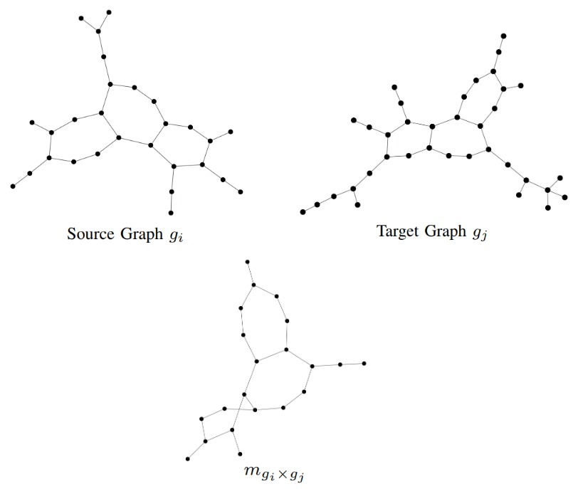
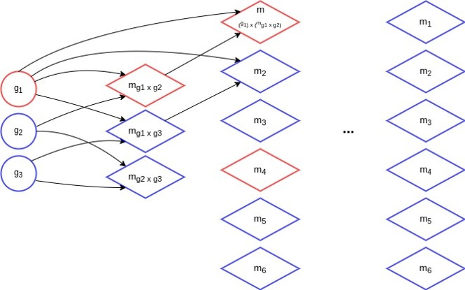
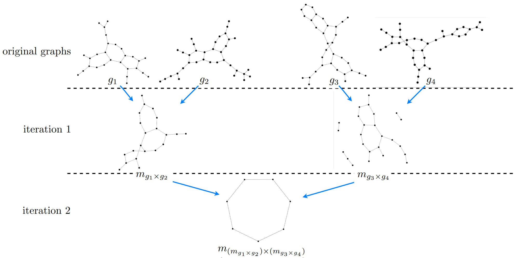
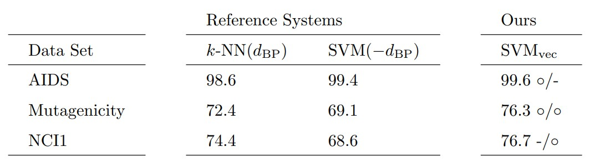

Graph Embedding in Vector Spaces Using Matching-Graphs
Mathias Fuchs and Kaspar Riesen
Introduction
Graphs are recognized as a versatile alternative to feature vectors. That is, graphs are used in diverse applications (e.g. protein function/structure prediction, signature verification or detection of Alzheimer’s Disease). A large amount of graph based methods for pattern recognition have been proposed. Graph edit distance (GED) is one of the most flexible distance models available. We employ a suboptimal algorithm for computing the GED in polynomial time. This distance is denoted by \(d_{BP}\). GED generally offers more information than merely a dissimilarity score, namely the information of the objects that actually match with each other (known as edit path). We exploit this information for graph embedding.
Graph Embedding by Matching-Graphs
The general idea of the proposed approach is to embed a given graph \(g\) into a vector space by counting whether or not a given matching-graph occurs in \(g\). Matching-graphs are built by extracting information on the matching of pairs of graphs and by formalizing and encoding this information in a data structure. Matching-graphs can be interpreted as denoised core structures of their respective class and they are built as follows. Given a source graph \(g_i\) and a target graph \(g_j\) the resulting matching-graph \(m_{g_i \times g_j}\) contains all nodes that have been substituted in the matching process. All nodes that have been inserted or deleted are not contained in the matching-graph. An edge is only contained in the matching-graph if it exists in \(g_i\) and between the corresponding substituted nodes in \(g_j\). In the following figure we can see an example of two graphs \(g_i\) and \(g_j\) and the resulting matching graph \(m_{g_i \times g_j}\).

The embedding works as follows. Let \(g\) be an arbitrary graph stemming from a given set of graphs. Using a set \(\mathcal{M} = {m_1, \ldots, m_N }\) of matching-graphs, we embed \(g\) according to
\[\varphi(g) = (\textit{sub}(m_1, g), \ldots, \textit{sub}(m_N, g)),\]
where
\[\textit{sub}(m_i, g) =
\begin{cases}
1 & \text{if } m_i \subseteq g
0 & \, \text{else}
\end{cases}\]
That is, for our embedding we employ subgraph isomorphism \(\textit{sub}(\text{. , .})\). To create the set of matching-graphs \(\mathcal{M}\) used for the embedding process, we use an algorithm that iteratively creates matching-graphs based on the matching-graphs of the previous iteration. First, we start by building all possible matching-graphs of the initial training data. At each iteration, we randomly select \(N\) graphs of the previous iteration and use these to create a new set of matching-graphs. Duplicates are deleted. This process continues, as long as new graphs are created. In the following figure we can see the iterative process with \(N = 4\).

In the following figure we can see an example of matching-graphs that are created over multiple iterations.

In this example we can nicely see how the size of the matching-graphs declines with increasing iterations.
Experimental Evaluation and Results
We test our approach on three different data sets and compare it to two algorithms that are commonly used in conjunction with graph edit distance. The first reference system is a \(k\)-nearest-neighbor classifier that directly operates on \(d_{\text{BP}}\) (denoted as \(k\)-NN(\(d_{\text{BP}}\))). The second reference system is a Support Vector Machine (denoted as SVM(\(-d_{\text{BP}}\))) that exclusively operates on a similarity kernel \(\kappa(g_i,g_j) = -d_{\text{BP}} (g_i,g_j)\). For classifying the embedded graphs, we also employ a Support Vector Machine that operates on the embedding vectors (using standard kernel functions for feature vectors). We denote our novel approach as SVM\(_{\text{vec}}\).
In the following table we can see the results of the experiments. Symbol \(\circ\) indicates a statistically significant improvement over the corresponding baseline.

We observe that our approach achieves better classification results compared to both baseline classifiers on all data sets. On the Mutagenicity data set our approach outperforms both reference systems with statistical significance. On AIDS and NCI1 we achieve a statistically significant improvement compared to the first and second reference system, respectively.